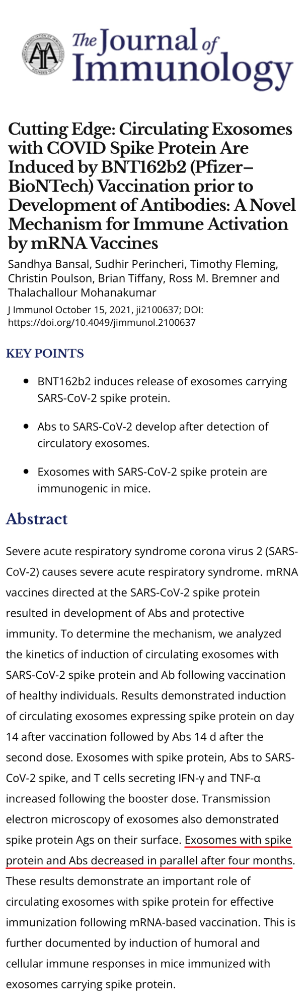

2021年10月20日：新型コロナワクチン接種後にスパイクタンパクが4か月間血中に循環する
9月27日の投稿「新型コロナワクチン接種後にスパイクタンパクが長期間血中に残存する場合がある」に示した内容を補強する論文が出ましたので、報告します。
Cutting Edge: Circulating Exosomes with COVID Spike Protein Are Induced by BNT162b2 (Pfizer–BioNTech) Vaccination prior to Development of Antibodies: A Novel Mechanism for Immune Activation by mRNA Vaccines

まずは「エクソソーム exosome」という語の解説です。
- 細胞の中に入ったワクチンのmRNAが設計図となって、スパイクタンパクが作られる
- 細胞膜の一部がスパイクタンパクを包み込んで細胞の外側に突出する
- 細胞膜が切り離され、スパイクタンパクが包まれた袋（エクソソーム）が細胞の外に出ていく
- エクソソームに包まれたスパイクタンパクは血液中を流れて、その他の臓器に取り込まれる
以下はこの研究で確認されたことです。
- 新型コロナワクチン1回接種後14日後にスパイクタンパクの含まれたエクソソームが血液中に検出される
- 新型コロナワクチン2回接種後14日後にスパイクタンパクに対する抗体が血液中に検出される
- スパイクタンパクの含まれたエクソソームと抗体は4か月かかって減少していく
これも厚生労働省が新型コロナワクチンQ&Aで記述している、「mRNAは、数分から数日といった時間の経過とともに分解されていきます。」という情報と一致しません。
以下は9月7日にモデルナ1回目を接種した高校生が10月16日現在までほぼ毎日発熱を反復しているという内容です。母親と思われる方がtwitterに具体的な経過や受診結果を報告しており、信憑性が高いと思われます。PCRや血液検査、胸部レントゲン、尿検査、CTなどを行い、原因は分からず、自己免疫疾患でもないとのことです。
しかし、上記論文のようにスパイクタンパクが血中に4か月間存在する場合があることを考えると、発熱が月単位で持続しても不思議ではありません。このような症状をきたしてしまう方は人間的な生活を送れるとは思えず、本来であれば保障されるべきと考えます。